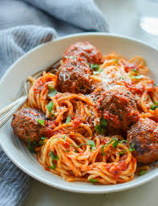

Home
Spaghetti Recipe

Traditional spaghetti is all about bold, comforting flavors. The sauce combines the sweetness of ripe tomatoes with the savory richness of sautéed garlic and onions, balanced by a touch of olive oil and a pinch of sugar. Dried herbs like oregano and basil add an earthy warmth, while a splash of red wine deepens the flavor. The al dente pasta absorbs the robust sauce, creating a harmonious blend of textures and tastes.
Each bite is a celebration of Italian simplicity—bright, tangy tomato meets the nutty, salty notes of freshly grated Parmesan. A drizzle of olive oil and fresh basil lend a fragrant, peppery finish, rounding out this timeless, satisfying dish. Perfect for cozy nights or family gatherings, it’s a plate full of comfort.
Ingredients
- Spaghetti pasta
- Basil
- Parmesan
- Herbs and Spices
- Garlic
- Onion
- Tomato
Steps
- Prepare the Sauce
- Cook the Tomatoes
- Season the Sauce
- Cook the Spaghetti
- Combine Pasta and Sauce
- Finish and Serve